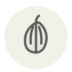

Échalote
Shallot
| Nom latin | Allium ascalonicum |
|---|---|
| Famille | Légumes |
| Origine | Asie centrale, via Ascalon |
| Saison | Toute l’année |
| Goût | Relevé · Sucré · Délicat |
| Prix courant | 4–7 €/kg |
Ce que c’est
Son nom se souvient d’Ascalon, le port antique d’où les croisés l’auraient rapportée. Diplômée de l’école de maintien des oignons, elle cautionne la moitié de la saucierie française — béarnaise, beurre blanc, réductions au vin, mignonette des huîtres — sans presque jamais figurer sur la carte.
En cuisine
Ciselez-la fin et suez-la sans coloration : brunie, l’échalote devient amère là où l’oignon devient doux. Crue en vinaigrette, dix minutes dans le vinaigre d’abord l’apprivoisent.
S’accorde avec
Beurre Estragon Moutarde Huître Crème
Même espèce
Ail fumé d’Arleux Échalote banane Ail noir Calçot Oignon doux des Cévennes Ciboulette
Entre aussi avec
Absinthe Agneau de Pauillac Agneau de pré-salé Aiguillette baronne Alose Baies des Bataks (poivre andaliman)
Une erreur ici, ou un oubli ? Dites-le nous